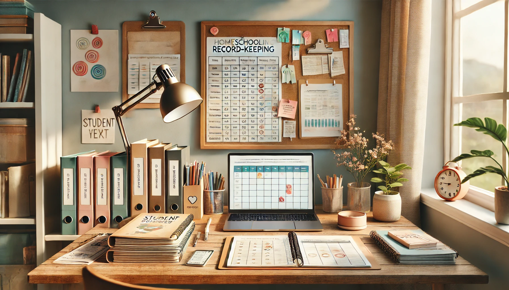

Homeschool Record Keeping & Assessment

What to Track (and What to Skip)
One of the most common questions homeschoolers ask is:
“Do I need to keep records? If so, what kind?”
Whether you're required to track progress by law or simply want to document your child’s learning for your own peace of mind, this post will help you understand how to handle homeschool record keeping and assessments - without stress or clutter.
Hint: It doesn’t have to be complicated. A simple binder or digital folder can go a long way.
Why Record Keeping Matters
Even if your area doesn’t require documentation, record keeping is helpful for:
⁕ Tracking academic progress
⁕ Creating high school transcripts
⁕ Preparing portfolios for evaluations
⁕ Remembering what you’ve covered
⁕ Celebrating milestones and growth
⁕ Keeping samples for college or career planning
What Should You Track?
You don’t need to track everything. Focus on meaningful, useful documentation. Here’s a list of common things homeschoolers choose to keep:
Attendance
⁕ A simple calendar or checklist showing school days
⁕ Not always required, but useful if your state mandates 180 days
Lesson Plans or Weekly Logs
⁕ A planner showing what you planned or actually did
⁕ Can be handwritten or digital (Google Docs, Trello, homeschool apps)
Work Samples
⁕ A few pieces of work per subject, per term
⁕ Include writing samples, math tests, science projects, artwork, etc.
Reading List
⁕ Books your child reads during the year (independent and read-alouds)
Field Trips and Projects
⁕ Record the date, location, and educational value
⁕ Photos + a short reflection work great!
Grades or Evaluations
⁕ Only necessary if you're grading for high school or submitting transcripts
⁕ You can use rubrics, progress notes, or written feedback instead of traditional grades
What About Portfolios?
A portfolio is a collection of work that shows your child’s progress over time.
What to Include:
⁕ A cover sheet with the child’s name and school year
⁕ Learning goals or objectives
⁕ Samples of work from various subjects
⁕ A summary or reflection from the parent and/or child
⁕ Optional: photos, art, writing journals, test scores
Tip: Use a 3-ring binder, file folder, or digital slideshow (like Google Slides) to organize.
What If My State Requires Records?
Homeschool laws vary widely. Some areas require portfolios, evaluations, or standardized testing, others don’t require anything.
Know the Legal Requirements:
⁕ How many school days or hours are required?
⁕ Are annual assessments, reports, or meetings required?
⁕ Do you need to register or submit anything to the local authority?
Visit your country, state, or region’s education department website, or check with a homeschool legal organization (like HSLDA in the U.S.).
Assessment Options for Homeschoolers
Informal Assessments
⁕ Observations, discussions, checklists
⁕ Oral narration, daily review, hands-on demonstration
⁕ “Tell me what you learned today.”
Formal Assessments
⁕ Quizzes, tests, worksheets, or end-of-unit reviews
⁕ Helpful for traditional curriculum users or high school credit
Standardized Tests
⁕ Required in some areas (check your laws)
⁕ Optional for parents who want outside benchmarking
Narration & Reflection
⁕ A Charlotte Mason-style method where children retell or reflect on what they learned
⁕ Builds comprehension and critical thinking
Digital Tools to Help You Stay Organized
You can keep your records the old-fashioned way or go digital. Here are some tools.
Google Drive:
Store lesson plans, scans, and photos
Trello:
Plan your year with digital checklists
Notion or Evernote:
For journaling and planning
Homeschool Planet / Homeschool Tracker:
Purpose-built homeschool organizers
Canva:
Create beautiful digital portfolios and transcripts
What Not to Stress Over
You don’t have to:
⁕ Grade every assignment
⁕ Record every single book or activity
⁕ Make it Pinterest-perfect
⁕ Create a massive binder for every subject
Keep it simple, meaningful, and sustainable.
Final Thoughts
Homeschool record keeping doesn’t have to be overwhelming. Whether you jot things down in a planner, take weekly photos, or build a year-end portfolio, the goal is to document your child’s learning journey with purpose and joy.
Stay flexible, stay organized, and most importantly - celebrate the growth.
Read ☛ “Socialization in Homeschooling: Busting the Myth & Finding Community” We’ll explore how homeschooled kids build friendships and social skills in real-life settings.